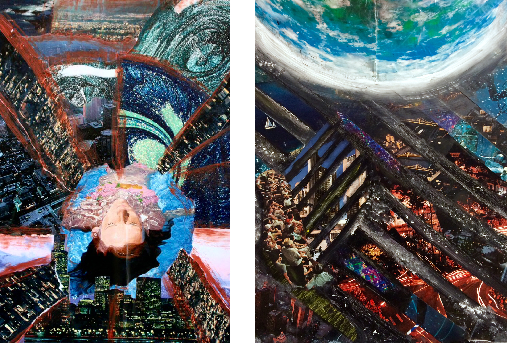

Illustration, Hand-Lettering
Studio Art
• Mixed Media
• Adobe Photoshop
• Adobe Illustrator
A collection of works I have created throughout the past few years. I grew up creating art, and studied oil painting for years before I branched off into other forms of studio art. Creating art is a large part of who I am and something I will always carry with me. Here are a few of my favorite pieces, I hope you enjoy looking at them as I enjoyed creating them.
